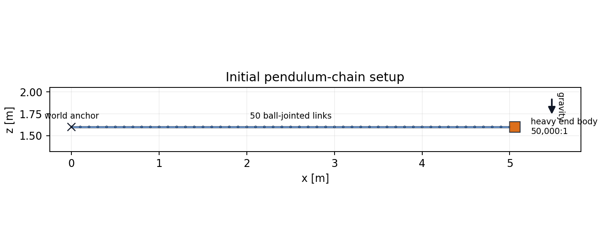
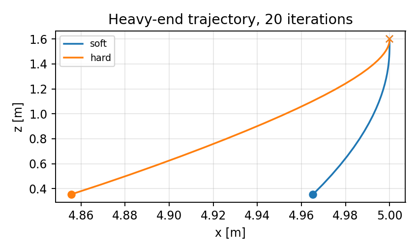
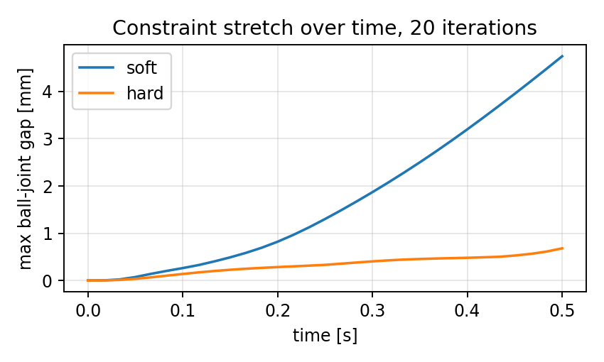
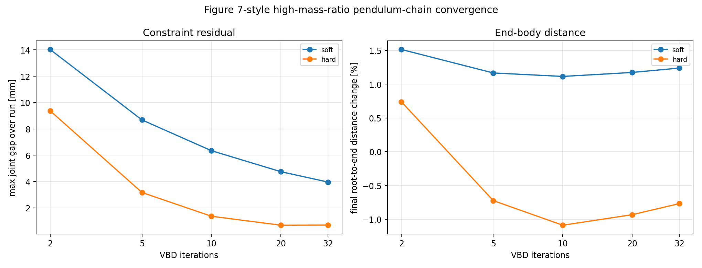

Setup
The chain starts horizontally under gravity. Adjacent capsule cap centers coincide with the ball-joint anchors, so neighboring links share the endpoint sphere region.
The primary metric is maximum ball-joint anchor separation. End-body motion is included only as visual context for the swing.

Comparison Video
The video runs the visual validation example in soft and
hard joint modes for a longer swing window with
20 VBD iterations, 2 substeps, and the
visual-example stiffness ke=5e7. The quantitative plots
below use the markdown report's selected short-run coefficients.
Result
Hard joints reduce residual.
At 20 iterations, max joint gap drops from
4.75 mm to
0.681 mm.
Endpoint motion is context.
The path plot shows the swing shape, not a pass/fail error metric.
Use joint gaps for quality.
Root-to-end distance naturally changes as the chain bends.
Joint Residual And Motion


Iteration Sensitivity
